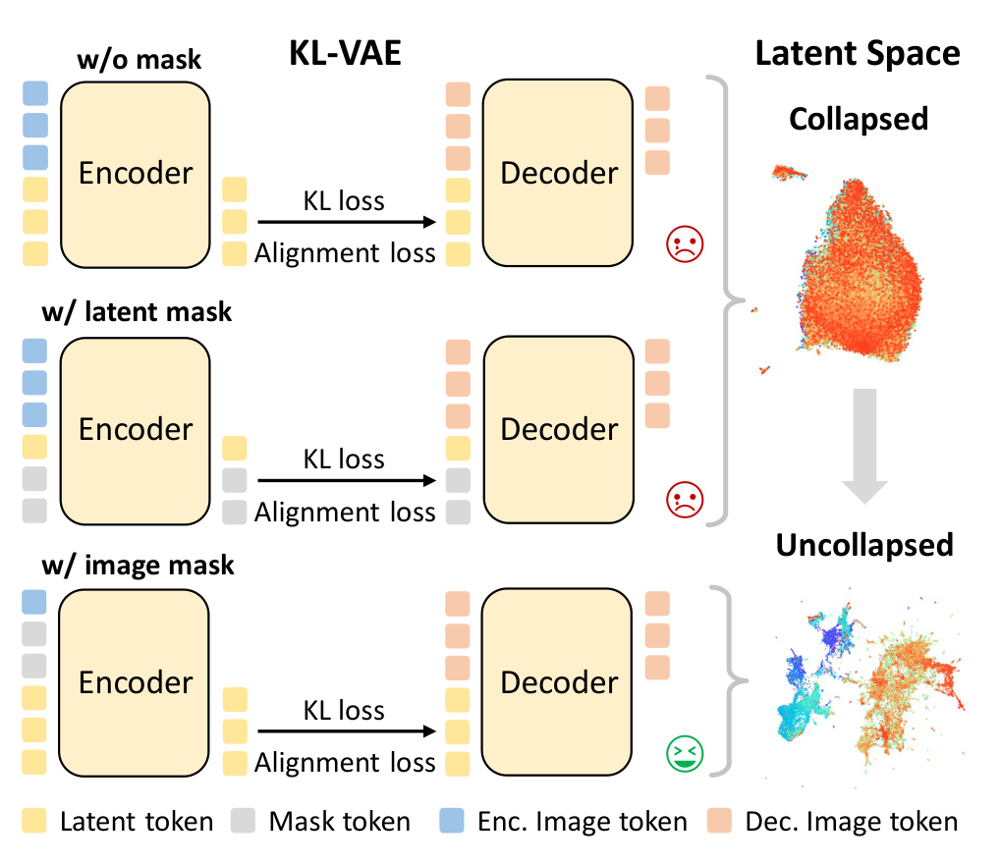
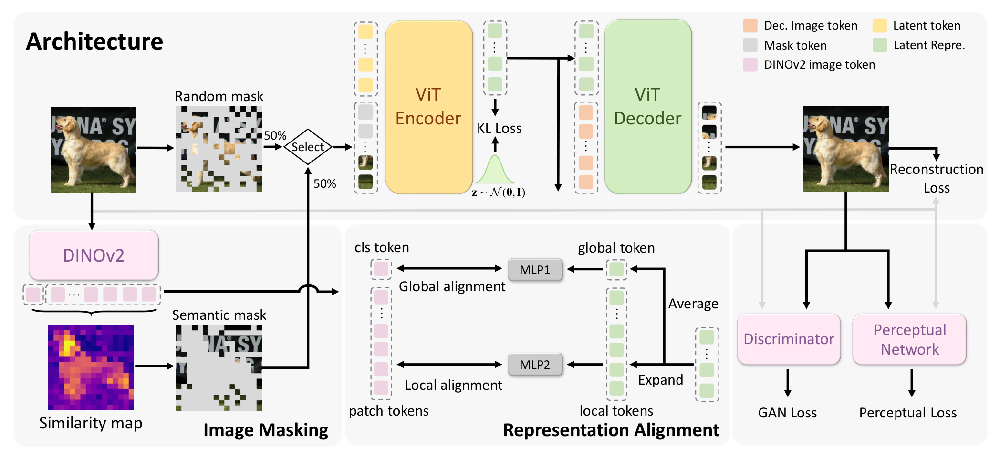
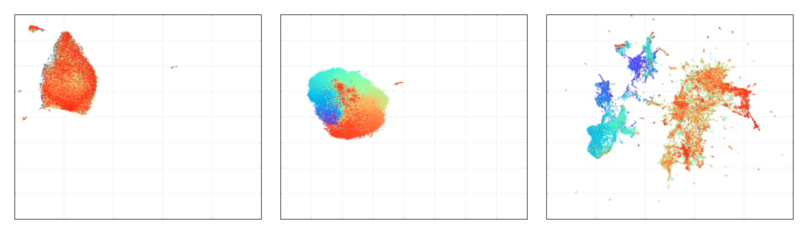
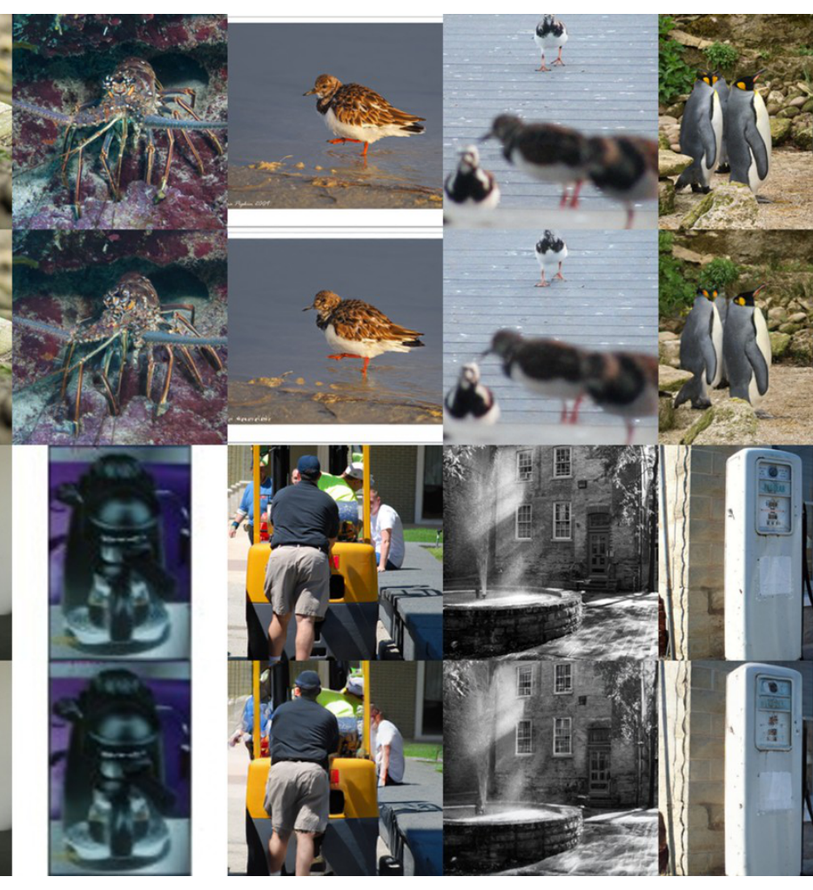
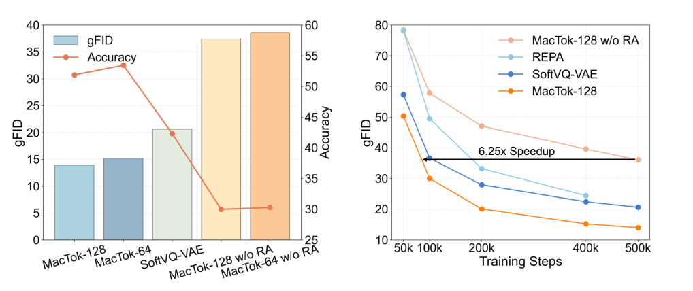

MacTok 深读：少 token 的连续 tokenizer 为什么会 posterior collapse，怎样用“把重建变难”反过来救它？
导读。MacTok 真正要回答的问题不是“能不能把图像压成更少的 token”，而是：当连续（VAE 式）tokenizer 的 token 压到 64–128 个时，KL 正则会把后验拉向先验、让 encoder 干脆不往 latent 里写信息（posterior collapse）——那要怎样逼这少数几个 token 重新变得“有用”？它的答案出人意料地朴素：把重建任务变难——随机 mask + DINO 语义 mask 让 decoder 没法只靠先验蒙混，再用与 DINO 特征的全局/局部对齐往 latent 注入判别性语义。
{kind=link}

1. 核心问题：少 token 为什么会 posterior collapse？
生成模型在压缩 latent 上建模能省大量算力，而 tokenizer 决定了这个 latent。连续 tokenizer 用 VAE 的 KL 正则换来平滑、结构化的 latent；但 token 一少（强压缩），KL 这一项就容易把后验直接拉到先验——encoder 不再编码有用信息，decoder 主要靠先验重建，少数 token 形同虚设。
问：KL 不是让 latent 更规整吗，怎么反而把信息挤没了？
引导：把 VAE 目标看成“重建（distortion）+ KL（rate）”的权衡——KL 是一个鼓励“遗忘/压缩”的 rate 项。
答：苏剑林把 VAE 目标写成 $\mathbb{E}_x\big[\mathbb{E}_{z\sim p(z|x)}[-\log q(x|z)]+\mathrm{KL}(p(z|x)\,\|\,q(z))\big]$，并指出那个 KL 项本质是“遗忘”的力量 [archives/6181]。当 latent 很小、而重建任务又太容易（强 decoder 不太需要 latent）时，优化器可以把 KL 压到 0（后验=先验）却几乎不增加重建误差——于是 rate 项“白赚”，encoder 干脆不写 latent。这就是 collapse；重建与 KL 的配比 [archives/5253] 决定了它有多容易发生。
Takeaway：collapse 的根因不是 KL 太强，而是“重建太容易、不需要 latent”，于是 KL→0 成了免费的午餐。
2. 贡献拆解：作者明确提出了什么？
作者明确提出的贡献：(a) MacTok，一个掩码增强的 1D 连续 tokenizer，用掩码重建 + 表征对齐在强压缩下防止 collapse；(b) 两种互补掩码——随机掩码正则 latent 学习、DINO 语义掩码遮住最有信息的区域以逼出高层语义；(c) 全局 + 局部表征对齐，把 DINOv2 的判别性语义注入压缩 latent。结果：64/128 token 即可，ImageNet 256 gFID 1.44、512 SOTA 1.52，token 用量最多减 64×。
读者能进一步推断的是：这套思路把“防止 collapse”从“调 KL 权重/退火”这类治标手段，换成了“改造重建任务本身”——只要让重建真正依赖 latent，collapse 就失去了存在的土壤。这对一切“压缩 + 重建”的自编码式表征都有借鉴意义。
3. 数据集与任务：tokenizer + 生成评测
任务是训练一个连续图像 tokenizer，并用它支撑下游生成。评测在 ImageNet 256×256 与 512×512 上，用 SiT-XL 作生成器，报告 gFID（越低越好），并与其它连续 tokenizer 对比 token 数与重建/生成质量。语义引导与对齐用预训练 DINOv2 提供。
4. Pipeline：从被遮挡的图到紧凑 latent
{kind=link}

问：为什么要随机 mask 和语义 mask 两种，各占一半？
答：随机 mask 与语义无关，主要正则——逼 latent 从残缺上下文补全任意区域，提升鲁棒性；语义 mask 专挑“最像物体主体”的 patch 遮掉，让重建非懂高层语义不可，把 DINO 的物体级知识隐式搬进 latent。两者互补：一个管广度鲁棒，一个管语义判别。
Takeaway：掩码不是数据增强的副产品，而是“把重建难度抬到 latent 必须出力”的主动设计。
5. 模型与方法：用掩码把 collapse 的“免费午餐”拿掉
先把 collapse 的机理写清楚。连续 tokenizer 的目标可写成重建 + KL 两项：
为什么会 collapse（rate-distortion 视角）
KL 是 rate 项，鼓励后验贴近先验、“遗忘”输入 [archives/6181]。若 latent 维度很小、重建又容易达成，distortion 对“是否使用 latent”几乎不敏感——优化器就会把 KL 压到 0、后验退化成先验，encoder 不再写信息。这正是 posterior collapse：不是 KL 太凶，而是 distortion 没给 latent“非用不可”的理由。重建与 KL 的配比 [archives/5253] 决定它发生的难易。
MacTok 的对策是抬高 distortion 对 latent 的依赖。随机掩码：以比例 $m\sim U[-0.1,M]$ 裁剪到 $[0,M]$（$M\!\approx\!0.7$，偶尔 $m=0$ 看到完整图）遮住 patch，逼 latent 从可见上下文补全缺失。语义掩码：用 DINOv2 的 cls token $c$ 与 patch token $p_i$ 的余弦相似度衡量信息量，遮掉最相似（最有信息）的 top-$\lfloor mN\rfloor$ 个：
为什么“把重建变难”反而阻止 collapse
collapse 的前提是“decoder 不需要 latent 也能重建”。一旦遮住（尤其遮住主体）patch，仅靠可见上下文或先验就补不出来——重建必须读 latent 才能完成，distortion 于是强烈依赖 latent，KL→0 不再免费。换句话说，掩码把 rate-distortion 权衡里“latent 可有可无”的退化解堵死了。再叠加 latent 与 DINO 全局/局部特征的对齐，等于直接往这少数 token 里灌入判别性语义，让它们既被迫有用、又语义丰富。承重假设：掩码要让重建真依赖 latent——若可见上下文就能轻松补全（mask 太弱或没挑到要害），就压不出信息；这也是为什么要 DINO 语义挑“要害”、且 mask 比例要够大但不过头（$M\!\approx\!0.7$、偶尔 0）。
6. 实验结果：少 token 还能高保真吗？
先看横向对比：同台的连续 tokenizer。在 ImageNet 256、SiT-B 训 500K 步下，MacTok 与一众连续 tokenizer 比重建（rFID）与生成（gFID）：
| Tokenizer | #Tok↓ | rFID↓ | PSNR↑ | gFID↓ | IS↑ |
|---|---|---|---|---|---|
| SD-VAE | 1024 | 0.61 | 26.04 | 7.66 | 187.5 |
| MAR-VAE | 256 | 0.53 | — | 6.26 | 177.5 |
| l-DeTok | 256 | 0.68 | — | 5.13 | 207.3 |
| VA-VAE | 256 | 0.28 | 26.30 | 4.33 | 222.1 |
| MAETok | 128 | 0.48 | 23.61 | 4.77 | 243.2 |
| SoftVQ-VAE | 64 | 0.88 | 22.13 | 4.09 | 256.9 |
| MacTok | 64 | 0.75 | 23.10 | 3.22 | 262.8 |
| MacTok | 128 | 0.43 | 25.03 | 3.15 | 258.3 |
读数：MacTok-128 的 gFID 是 3.15，低于所有对比的连续 tokenizer（MAETok 4.77、SoftVQ 4.09、VA-VAE 4.33、SD-VAE 7.66）；连只用 64 token 的版本（3.22）也都更好。重建侧，128-token 的 rFID 0.43 优于 MAETok 0.48、64-token 的 0.75 优于同样 64-token 的 SoftVQ-VAE 0.88——在更狠的压缩下反而更准，正是“掩码逼出有信息的 latent”的体现。
{kind=link}

{kind=link}

再看系统级 SOTA。换成大模型 SiT-XL，MacTok 在 ImageNet 512 上把 gFID 做到 1.52（256 上 1.44），而所用 token 仅 64/128——对比下表，扩散类基线动辄 1024–4096 token：
| 方法 | #Tok↓ | gFID↓ | IS↑ |
|---|---|---|---|
| SiT-XL/2 | 4096 | 2.62 | 252.2 |
| MAR-H | 1024 | 1.73 | 279.9 |
| TexTok-128 | 128 | 1.80 | 305.4 |
| MAETok | 128 | 1.69 | 304.2 |
| SoftVQ-VAE | 64 | 2.21 | 290.5 |
| MacTok+SiT-XL | 64 | 1.52 | 306.0 |
| MacTok+SiT-XL | 128 | 1.52 | 316.0 |
读数：64 与 128 token 都做到 gFID 1.52，优于所有对比方法（含 4096-token 的 SiT-XL/2 2.62、1024-token 的 MAR-H 1.73、128-token 的 MAETok 1.69），而 token 用量最多减 64×。强项明确在“强压缩区间又不掉生成质量”。
问：这些提升是“掩码 + 对齐”带来的，还是只是 DINO 蒸馏的功劳？
答：见下节表 D——逐模块累加把 gFID 从 6.01 一路压到 3.15，随机掩码、局部/全局对齐、语义掩码各有贡献，去掉任一都更差，而非单靠 DINO。latent 可视化（图 3）与线性探针（下节图 5）又从“结构”和“判别性”两面独立佐证。
Takeaway：主张成立的边界是“强压缩连续 tokenization”，证据覆盖生成质量（表 B/C，gFID 3.15 / 1.52）与 latent 质量（图 3 结构、探针判别性）两面。
7. 消融：每个设计都必要吗？
(1) 逐模块拆：每加一块都降 gFID。在 KL-VAE 基础上依次加随机掩码、局部对齐、语义掩码、全局对齐（ImageNet 256，SiT-B，含 decoder 微调，最优 CFG）：
| 累加模块 | rFID↓ | PSNR↑ | gFID↓ | IS↑ |
|---|---|---|---|---|
| + 随机掩码 | 0.58 | 24.30 | 6.01 | 234.8 |
| + 局部对齐 | 0.44 | 25.02 | 3.53 | 241.9 |
| + 语义掩码 | 0.43 | 24.97 | 3.32 | 249.2 |
| + 全局对齐（完整） | 0.43 | 25.03 | 3.15 | 258.3 |
gFID 从 6.01 一路降到 3.15：随机掩码先把 KL 的 collapse 治住（让 latent 被用上），局部对齐降幅最大（6.01→3.53）把 latent 结构化，语义掩码再补判别性（→3.32），全局对齐收口（→3.15）。四块各有贡献，不是单靠 DINO。
{kind=link}

(2) 掩码该多狠？最大掩码比 $M$ 从 0.4 到 0.8，gFID（无 CFG）先降后升，$M=0.7$ 最优（14.59）；把随机与语义掩码各占一半（dino 50%）比全用语义（dino 100% 14.84）更好（13.95）——太弱压不出信息、太强伤重建，且两种掩码互补。强掩码略降的重建保真可由 decoder 微调补回（rFID 回到 0.43）。
问：消融与机理是否自洽？
答：自洽。表 D“随机掩码先把 gFID 从塌缩区拉到 6.01、再靠对齐/语义掩码降到 3.15”对应第 5 节“掩码堵住 KL→0 的退化解、对齐往 latent 灌语义”；掩码比 $M=0.7$ 最优、random+semantic 各半最好，对应“重建要难到 latent 必须出力、但别难到学不动”。理论、可视化（图 3）、探针（图 5）、消融（表 D）四处互证。
Takeaway：关键不是“加不加 KL”，而是“让重建非用 latent 不可（随机+语义掩码，$M\!\approx\!0.7$、各半最好）、并往 latent 里灌语义（局部 6.01→3.53、全局 →3.15）”。
8. 局限与复现门槛：什么时候要谨慎？
| 边界 | 论文/方法信息 | 读者应如何理解 |
|---|---|---|
| 依赖 DINO | 语义掩码与对齐都用 DINOv2 | latent 的语义上限受 DINO 限制；换弱 teacher 可能掉效果 |
| 掩码调参 | mask 比例 $M\!\approx\!0.7$、随机/语义各半 | 太弱压不出信息、太强伤重建；需按数据/压缩率调 |
| 承重假设 | 掩码须让重建真依赖 latent | 若可见上下文就能补全，掩码救不了 collapse |
| 适用区间 | 强项在 64/128 token 的强压缩 | token 充裕时相对优势收窄 |
| 评测范围 | 主评测为 ImageNet 256/512 + SiT-XL | 更高分辨率/其它生成器仍需验证 |
问：这篇论文最容易被过度宣传成什么？
答：容易被说成“掩码万能解 collapse”。更严谨的说法是：在强压缩连续 tokenization 里，用掩码重建把“latent 可有可无”的退化解堵死、再用 DINO 对齐注入语义，从而在 64/128 token 下取得高保真生成。
Takeaway：强项是“强压缩 + 防塌缩 + 高保真”；边界是 DINO 依赖、掩码调参与适用区间。
结语：几点学术判断
一句话总结：MacTok 把“防止 posterior collapse”从调 KL 的治标手段，改成“改造重建任务”——用掩码让重建非依赖 latent 不可，再用 DINO 对齐把语义灌进少数 token。
- collapse 的根因是“重建太容易、不需要 latent”，于是 KL（rate 项）→0 成了免费午餐。
- 把重建变难（随机 + 语义掩码）让 distortion 强依赖 latent，堵死退化解，collapse 自然消失。
- 全局/局部表征对齐进一步把 DINO 的判别性语义注入压缩 latent，让少数 token 既被迫有用、又语义丰富。
资料来源与图像说明
- Guanghao Li, Yuxiang Yan, Xin Gao, Hengyu Zeng, Jiaoyang Ruan, Junpeng Ma, Haoyu Albert Wang, Jian Pu. MacTok: Robust Continuous Tokenization for Image Generation. CVPR 2026 / arXiv:2603.29634（复旦大学）。
- 本文公式、表格与实验数字以 arXiv PDF 为准；VAE 目标的“重建 + KL（rate/遗忘）”视角与重建-KL 配比参考苏剑林 [archives/6181]、[archives/5253]，非本文独有。
- 图像说明：所有正文图为本地 PNG，来自 arXiv PDF 的高 DPI 页面裁切（图 1/2/3），路径位于
assets/figures/mactok/。